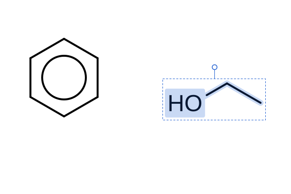
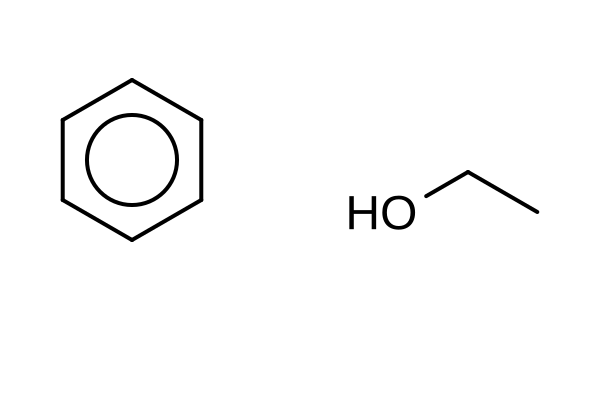

Right-click on a molecule: it is selected first

Right-click on empty canvas, nothing selected

Native, approximate: both menus are Windows popup menus (access keys underlined as when opened with the Menu key). Canvas crops are real svg-render output.